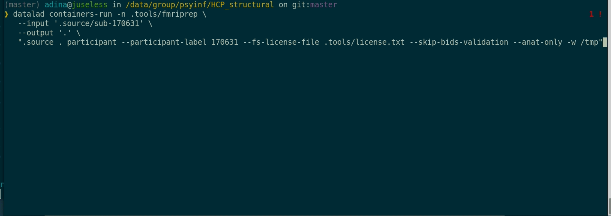

Data ... Lad
Michael Hanke & Adina Wagner


Use cases in data storage and retrieval
- DataLad: Joint management of digital objects through their entire life cycle
DataLad's features,
enable a range of common use cases for storing and retrieving data
Data sharing & consumption

|
|
Data sharing & consumption

|
|
Data sharing & consumption

Data sharing & consumption
- Publish (or consume) datasets via GitHub, GitLab, Gin, OSF, or similar services

Data sharing & consumption
- Publish (or consume) datasets via GitHub, GitLab, Gin, OSF, or similar services

Data sharing & consumption
- Publish (or consume) datasets via GitHub, GitLab, Gin, OSF, or similar services
Data sharing & consumption
- Special Case: Central data management and archival system

Beyond data: Provenance

|
|
Beyond data: Provenance
- Creating and sharing reproducible, open science: Sharing data, software, code, and provenance

Containerized workflows

Provenance capture
- Computational provenance: Datasets can track software containers, and perform and record computations inside it:
$ datalad containers-run -n neuroimaging-container \
--input 'mri/*_bold.nii --output 'sub-*/LC_timeseries_run-*.csv' \
"bash -c 'for sub in sub-*; do for run in run-1 ... run-8;
do python3 code/extract_lc_timeseries.py \$sub \$run; done; done'"
-- Git commit -- Michael Hanke < ... @gmail.com>; Fri Jul 6 11:02:28 2019
[DATALAD RUNCMD] singularity exec --bind {pwd} .datalad/e...
=== Do not change lines below ===
{
"cmd": "singularity exec --bind {pwd} .datalad/environments/nilearn.simg bash..",
"dsid": "92ea1faa-632a-11e8-af29-a0369f7c647e",
"inputs": [
"mri/*.bold.nii.gz",
".datalad/environments/nilearn.simg"
],
"outputs": ["sub-*/LC_timeseries_run-*.csv"],
...
}
^^^ Do not change lines above ^^^
---
sub-01/LC_timeseries_run-1.csv | 1 +
...Provenance capture
- All recorded transformations can be re-computed automatically
$ datalad rerun eee1356bb7e8f921174e404c6df6aadcc1f158f0
[INFO] == Command start (output follows) =====
[INFO] == Command exit (modification check follows) =====
add(ok): sub-01/LC_timeseries_run-1.csv (file)
...
save(ok): . (dataset)
action summary:
add (ok: 45)
save (notneeded: 45, ok: 1)
unlock (notneeded: 45)
...- Aid with the reproducibility of a result and verify it (via content hash)
- Use complete capture and automatic re-computation as alternative to storage and transport
Containerized workflows
Large-scale, containerized workflows

Concepts: Data sharing without privacy breach
- Expose (sensitive) file content versus anonymized metadata on a per-file basis
Concepts: Computation to data
- Expose sufficient anonymized metadata to allow code development, but don't share raw data, only results
Find out more
|
More use cases & comprehensive user documentation in the DataLad Handbook (handbook.datalad.org) |
|
 |
|
 |
|
 |
|